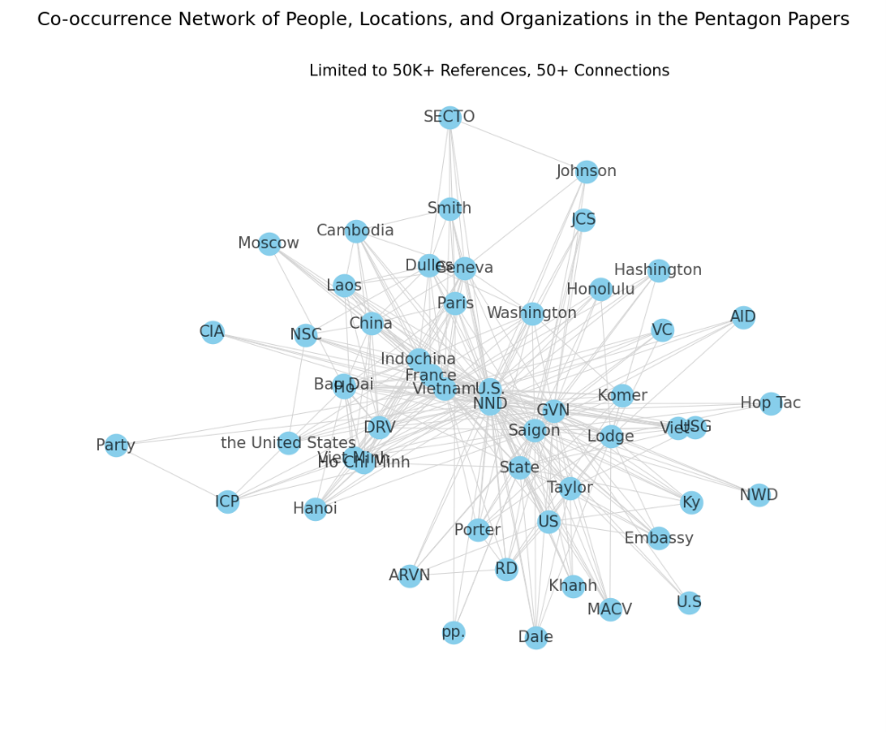

For my machine learning final project, I built a model to scan the Pentagon Papers and document the relationships between all the players in the Vietnam War. I finished the class with an A.
Investigative journalism teams work with massive text datasets and have to parse through to find which pages are most valuable. This works fine manually for small projects, but some reports cover thousands or even millions of documents. For my project, I’ve used spaCy’s Named Entity Recognition tool to find the locations, organizations and people mentioned within the Pentagon Papers.

Data Preprocessing
The government archive of the papers is scanned documents, so I had to turn the PDFs into text. I took a sample of 5 sections of the papers just for convenience. With PyPDF2, the transcription doesn’t take too long, and it’s fairly accurate for most simple pages like the one pictured:

TOP SECRET -Sensitive I. A. U.S. POLICY, 1940-1950 1. Indochina in U.S. Wartime Policy, 1941-1945 In the interval between the fall of France in 1940, and the Pearl Harbor attack in December, 1941, the United States watched with increasing apprehension the flux of Japanese military power into Indochina. At first the United States urged Vichy to refuse Japanese requests for authoriza-tion to use bases there, but was unable to offer more than vague assur-ances of assistance, such as a State Department statement to the French Ambassador on 6 August 1940 that: “We have been. doing and are doing everything possible ’l-Tithin the framework of our established policies to keep the situation in the Far East stabilized; that we have been progressively t…
There are some small errors, specifically the W in “within” became “l-T”, but overall it does pretty well. It doesn’t do as well with multiple columns and does very poorly with maps, so an image classification model to recognize where the text is would be useful, but outside my scope.
Selection, training, and use of a Machine Learning Model
The spaCy Named Entity Recognition comes pre-built for different languages and is really good. However, many of the people, organizations, and locations I’m looking for are Vietnamese. The grammar won’t be a problem, but I want to isolate some of these entities and make sure they get recognized. Between the maps, the tables of locations and figures, and my own parsing, I was able to build a fairly comprehensive list of individuals referenced on the early pages, which I then added to the base model in these categories and had it re-train.
Interpretation of results: Metrics and Limitations)
| Trained on | Entities | Epochs | Precision | Accuracy | F-1 Score | Pg 225 |
|---|---|---|---|---|---|---|
| 95 pgs | 74 | 68 | 98.92 | 97.35 | 98.92 | 5/11 |
| 15 pgs | 90 | 257 | 76.19 | 88.89 | 82.05 | 5/11 |
A large training sample was a lot more effective, even if it wasn’t fully annotated. Between the two, I ended up using that one because of its much higher accuracy. When given a random page to identify (pg. 225), the two faired similarly.
However, it could use a lot more work. I tried my best to incorporate Vietnamese into the dataset, but I’ve never spoken the language and didn’t reach out to anybody who does. I don’t have high confidence that I got the organizations and people right.
I also spent little time optimizing the pdf reader. The reader consistently misread “Moscow” as “Mosco,” and I can only imagine others were mislabeled as well, so some entities may have been undercounted in my diagram.
Communication of results
The graph shows some powerful relationships. I had to limit it to entitles with 15K references, and connections stronger than 50. At this level, it’s probably only useful for those of us who don’t know much about the war, because most are obvious connections (“Washington” with “United States” and “U.S.”, or “Cambodia” with “Laos’).
All the groups I identified I double-checked as real entities during the war, so there was very little Type I error, especially with a minimum of 15,000 references.
Ethical implications
A method like this has to be a tool to aid journalists and researchers, not a decider, because we are only exploring relationships. Entities might appear together for many reasons, not always because they have a shared goal and strategy, so building accusations or creating a narrative without reading the documents would be unfounded.
However, building a tool like this will be very useful for parsing huge documents. The Pandora papers was over 6 million pages and this can help people trying to hold others accountable for unscrupulous behavior.
It would also be useful to run this on the whole document, because I only grabbed sections of the whole thing. There might be some bias towards the early or middle parts of the war and investigation, without taking into account the development of the war.
My post-graduation goal is to work in data journalism, and I’m hoping that work like this can continue to be a part of my life.
Results
See the full code online here.
And just for fun, here’s an early model I made before filtering down the references: